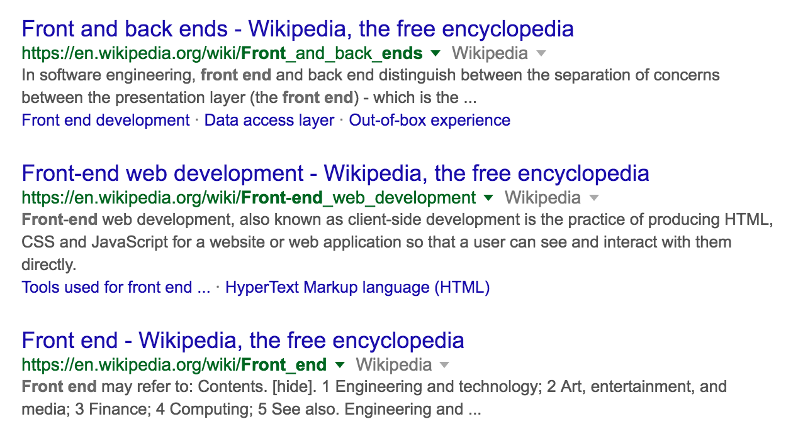
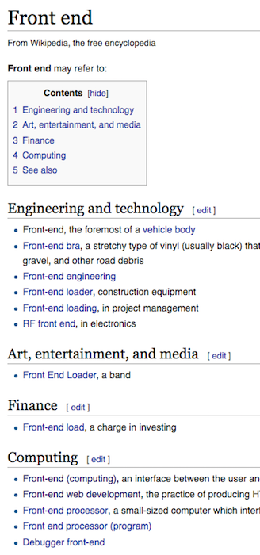
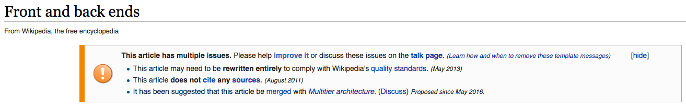
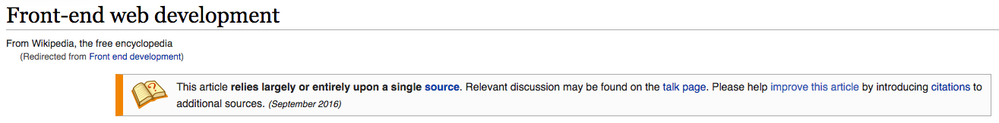
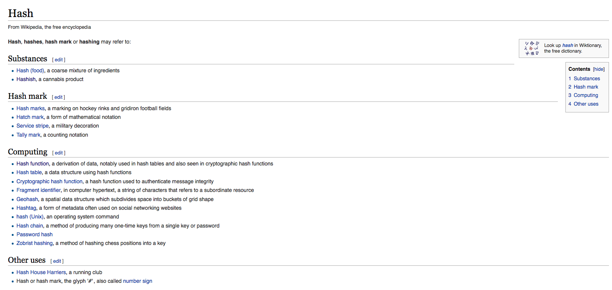

What the duck-
typed are my engineers
...saying?
A talk about words by Jennifer Wong
jennz0r / @mybluewristband
I'm Jenn
I'm a self-taught Front End Developer.
Software Engineer

(Human) Wasteland
aka The Poop Map
Developers Developers

Disclaimers
Animated GIFs
Errors

You might be like

But before you're like...
Let's talk about it!
After these messages...
Allons-y!
Developer
Software Engineer
Programmer
Code Monkey
Some days
When I look at my computer...
Sometimes
When I'm in conversation with other devs...
There are only two hard things in Computer Science: cache invalidation and naming things.- Phil Karlton
Front-end vs. Back-end
Frontend vs. Backend
Frontend vs. Backend
Frontend vs. Backend
 Frontend vs. Backend
Front-end web development, also known as client-side development is the practice of producing HTML, CSS and JavaScript for a website or Web Application so that a user can see and interact with them directly.
A rule of thumb is that the front (or "client") side is any component manipulated by the user. The server-side (or "back end") code resides on the server.
- Wikipedia on Front-end Web Development
front (or "client") side
server-side (or "back end")
Wait... what's a client?
Wait... what's a server?
Client & Server
The client–server model is a distributed application structure that partitions tasks or workloads between the providers of a resource or service, called servers, and service requesters, called clients.
- Wikipedia on Client-Server Model
Frontend vs. Backend
Client Side vs. Server Side
Frontend = Client Side
Backend = Server Side
Full Stack
Toronto
Wait... What's a Stack?
Stack
In computer science, a stack is an abstract data type that serves as a collection of elements, with two principal operations: push, which adds an element to the collection, and pop, which removes the most recently added element that was not yet removed.
- Wikipedia on Stack (abstract data type)

Full Stack
In tech, the stack, or the solution stack, is the set of software and hardware resources that are necessary for a web product to function.
What's your stack?
= Do you even lift, bro?
Refactoring
factor (v.)
1610s, "act as an agent, manage," from factor (n.). The use in mathematics is attested from 1837. Related: Factored; factoring.
x² + 4x + 3
x² + ax + b
(x + 3)(x + 1)
Break it down.
Refactoring
Code refactoring is the process of restructuring existing computer code—changing the factoring—without changing its external behavior. Refactoring improves nonfunctional attributes of the software. Advantages include improved code readability and reduced complexity; these can improve source-code maintainability and create a more expressive internal architecture or object model to improve extensibility.
- Wikipedia on Code Refactoring
Factoring -> Decomposition
Decomposition
Decomposition in computer science, also known as factoring, is breaking a complex problem or system into parts that are easier to conceive, understand, program, and maintain.
- Wikipedia on Decomposition in Computer Science
Then... isn't refactoring just factoring?
Refactoring = Factoring
Abstraction
abstraction (n.)
c. 1400, "a withdrawal from worldly affairs, asceticism," from Old French abstraction (14c.), from Latin abstractionem (nominative abstractio), noun of action from past participle stem of abstrahere "drag away, pull away, divert" (see abstract (adj.)). Meaning "idea of something that has no actual existence" is from 1640s.
Abstraction
In software engineering and computer science, abstraction is a technique for arranging complexity of computer systems. It works by establishing a level of complexity on which a person interacts with the system, suppressing the more complex details below the current level. The programmer works with an idealized interface (usually well defined) and can add additional levels of functionality that would otherwise be too complex to handle.
- Wikipedia on Abstraction in Software Engineering
Abstraction
Conceptual abstractions may be formed by filtering the information content of a concept or an observable phenomenon, selecting only the aspects which are relevant for a particular purpose. For example, abstracting a leather soccer ball to the more general idea of a ball selects only the information on general ball attributes and behavior, eliminating the other characteristics of that particular ball.
Abstraction
Conceptual abstractions filter content of an observable phenomenon, selecting only the aspects relevant for a particular purpose. For example, abstracting a soccer (football) ball selects only general ball attributes (such as spherical shape), eliminating other, more specific characteristics (such as hexagonal pattern).
Abstraction
var smallRadius = 1,
bigRadius = 100;
var smallArea = Math.PI * (smallRadius ** 2);
console.log(smallArea);
var bigArea = Math.PI * (bigRadius ** 2);
console.log(bigArea);
Abstraction
function circleArea(radius) {
var area = Math.PI * radius**2;
console.log(area);
}
circleArea(1);
circleArea(100);
What an abstract concept!
Recursion
Recursion (n.)
1610s, from Latin recursionem (nominative recursio) "a running backward, return," noun of action from past participle stem of recurrere "run back".
Recursion
The most common application of recursion is in mathematics and computer science, in which it refers to a method of defining functions in which the function being defined is applied within its own definition.
Recursion
Specifically, this defines an infinite number of instances (function values), using a finite expression that for some instances may refer to other instances, but in such a way that no loop or infinite chain of references can occur.
Recursion
In mathematics and computer science, a class of objects or methods exhibit recursive behavior when they can be defined by two properties:
1. A simple base case (or cases)—a terminating scenario that does not use recursion to produce an answer
2. A set of rules that reduce all other cases toward the base case
Recursion
A function that calls itself.
Factorials!
5! = 5 * 4 * 3 * 2 * 1
var factorial = function (n) {
if (n <= 1) {
return 1;
} else {
return n * factorial(n-1);
}
};
Dictionary, Hash, Object
What's the difference? Is there one?
Dictionary
Dictionary (n.)
1520s, from Medieval Latin dictionarium "collection of words and phrases," from Latin dictionarius "of words," from dictio "word" (see diction). Probably first English use in title of a book was in Sir Thomas Elyot's "Latin Dictionary" (1538) though Latin Dictionarius was so used from early 13c. Grose's 1788 "Dictionary of the Vulgar Tongue" has "RICHARD SNARY. A dictionary." (1927).
Hash
Hash (n.)
"a stew of meat cut into small pieces," 1660s, from hash (v.). Meaning "a mix, a mess" is from 1735.
or
short for hashish, 1959.
Hash
Object
Object (n.)
late 14c., "tangible thing, something perceived or presented to the senses," from Medieval Latin objectum "thing put before" (the mind or sight), noun use of neuter of Latin obiectus "lying before, opposite" (as a noun in classical Latin, "charges, accusations"), past participle of obicere "to present, oppose, cast in the way of," from ob "against" (see ob-) + iacere "to throw" (see jet (v.)).
Object
In computer science, an object can be a variable, a data structure, or a function or a method, and as such, is a location in memory having a value and possibly referenced by an identifier.
In the class-based object-oriented programming paradigm, "object" refers to a particular instance of a class where the object can be a combination of variables, functions, and data structures.
In relational database management, an object can be a table or column, or an association between data and a database entity (such as relating a person's age to a specific person).
Dictionary
In computer science, an associative array, map, symbol table, or dictionary is an abstract data type composed of a collection of (key, value) pairs, such that each possible key appears at most once in the collection.
Key-Value Pairs
five_wives = {
'Leader': 'The Splendid Angharad',
'Funny': 'The Dag',
'Brainy': 'Toast the Knowing',
'Fragile': 'Cheedo the Fragile',
'Seductive': 'Capable'
}
Hash
In computing, a hash table (hash map) is a data structure used to implement an associative array, a structure that can map keys to values. A hash table uses a hash function to compute an index into an array of buckets or slots, from which the desired value can be found.
Dictionary : Dream :: Hash : Reality
Takeaway
Dictionaries are
Hashes are
Objects
Everything is an object!
The terms dictionary, hash, and object are often used interchangeably.
Concatenation (n.)
c. 1600, from Late Latin concatenationem (nominative concatenatio) "a linking together," noun of action from past participle stem of concatenare "to link together," from com- "together" (see com-) + catenare, from catena "a chain" (see chain (n.)).
This is my cat!
console.log("Todo es mejor con " + "cat" + "!");Recursive Cat!

Acronyms
CRM CMS CDN
Customer Relationship Manager
like Salesforce!
Content Management System
like Wordpress!
Content Delivery Network
like Amazon CloudFront!
SaaS vs. Sass
Please clarify when you're talking about these.
Software as a Service (like Salesforce)
Syntactically awesome stylesheets (CSS extension language)
DOM

DOM

DOM

The Dom is a mountain of the Pennine Alps, located between Randa and Saas-Fee in the canton of Valais.
DOM
Document Object Model
The Document Object Model (DOM) is a cross-platform and language-independent convention for representing and interacting with objects in HTML, XHTML, and XML documents.
Document Object Model
The Document Object Model (DOM) is a programming interface for HTML, XML and SVG documents. It provides a structured representation of the document (a tree) and it defines a way that the structure can be accessed from programs so that they can change the document structure, style and content.
- Mozilla Developer Network on DOM
GUI & CLI
Ooey Gooey Butter Cake
Geoduck
CLI
GUI + CLI
Graphical User Interface (GUIs) were introduced in reaction to the perceived steep learning curve of Command-Line Interfaces (CLIs), which require commands to be typed on the keyboard.
Don't be like...
Please be more like...
It's difficult!
Thank you
jennz0r.github.io/think-know-not-sure
A talk about words by Jennifer Wong
jennz0r / @mybluewristband